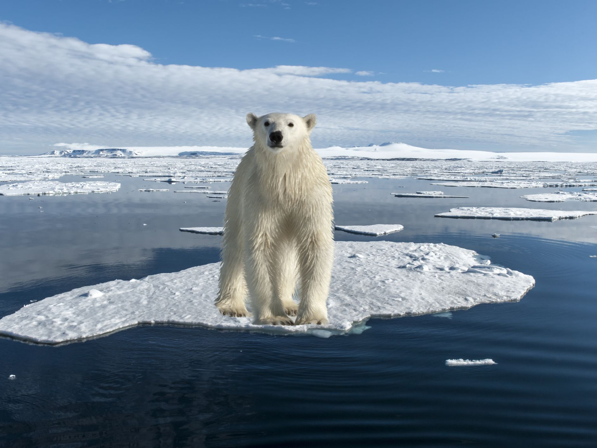
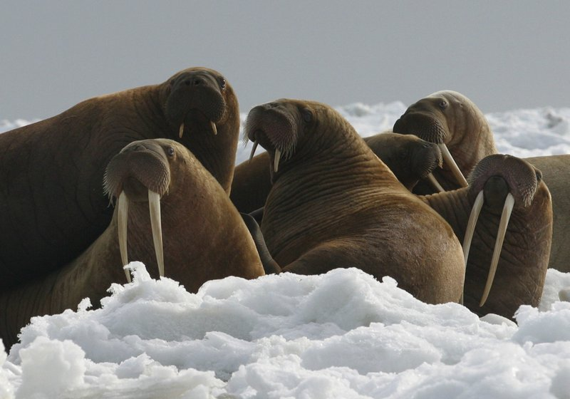
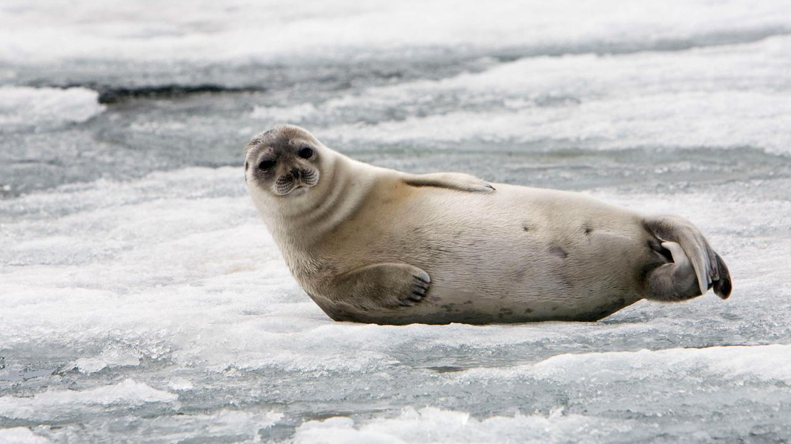
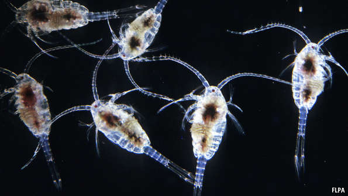
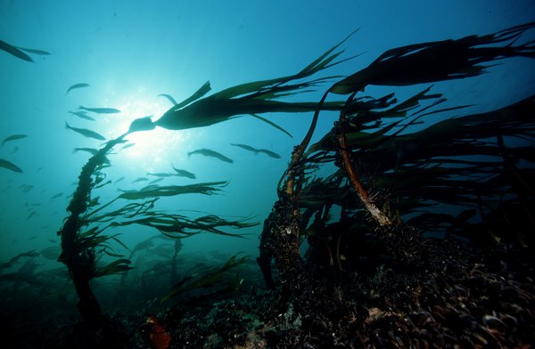
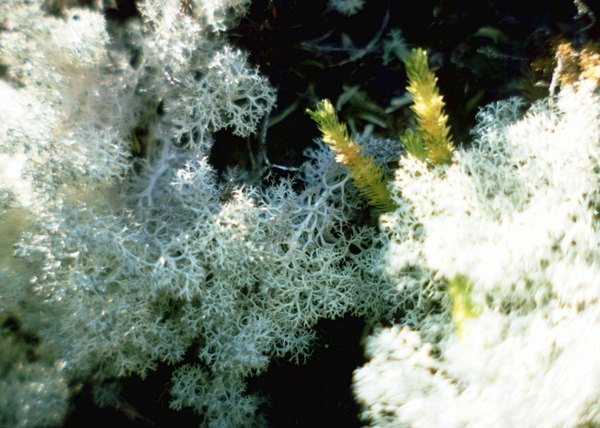

Arctic Ocean: Animals and Plants
| Human Impact | Culture | Food Sources |
The Arctic region endures some of the greatest extremes: extreme cold, seasonal changes in daylight, and winds.
The Arctic Ocean is home to numerous fish, mammals, and birds. Due to the ice coverage on the Arctic Ocean, its animal
inhabitants have adapted to be skilled both on ice and in open water.
Animals:
There are many animals that are located in the Artic Ocean; for example: polar bears, walruses, narwhals,
ringed seals, seabirds, etic.
Polar Bears:
Polar bears are one of the most well known species that reside in the Arctic Ocean ecosystem. They are the largest
terrestrial mammalian carnivore species. The bears are born on land, however they spend most of their life on
sea ice. Polar bears primary food source are seals that come up from the ocean through holes in the ice to breathe.
As sea ice has been declining over the past decades, so too have polar bear population numbers. Because of the decreasing
sea ice, polar bears are currently listed as a threatened under the Endangered Species Act.
Walruses:
Walruses spend much of their time in the more shallow waters of the Arctic Ocean looking for mollusks to eat.
Walruses are covered in a thick layer of skin and blubber that keeps them insolated in the arctic temperatures. Walruses
only have two natural predators: the polar bear and the killer whale. These large mammals are often considered a keystone
species of the Arctic by scientists.
Ringed Seal:
The ringed seal gets its name from the distinctive fur pattern of dark spots surrounded by grey rings. It is the most
abundant seal in the Arctic. Ringed seals are the favorite meal of the polar bear. The seals remain on the sea ice for most
of the year; it is where they live and give birth. They prefer large packs of ice, where they are able to find breathing
holes and remain protected under the ice from predators. The seals feed on a large number of oceanic fish in the Arctic area.



Plants:
The tundra is characterized by permafrost, a layer of soil and partially decomposed organic matter that is frozen
year-round. Only a thin layer of soil, called the active layer, thaws and refreezes each year. This makes shallow root
systems a necessity and prevents larger plants such as trees from growing in the Arctic.
The freezing arctic ocean adds to the difficulty of survival of arctic plants, leaving only a few that can overcome
the obstacles. For example:
Artic Plankton (Phytoplankton):
Phytoplankton consist mostly of algae and bacteria and are vital to the ecosystem as they serve as food at the bottom
of the food chain. Phytoplankton use sunlight and nutrients to produce their own food. The cold, polar water is the
perfect breeding ground for phytoplankton.
Artic Seaweed:
The seaweed in the Arctic Ocean are capable of surviving at low temperatures and low sunlight. They do not serve as food
for the marine animals, however once they wash up to the shore, they serve as food for the land animals like the arctic
hare and polar fox.
Artic Moss:
The moss grows on the bottom of tundra lake beds and in and around bogs and fens. Normally, it is brown-colored with
very tiny leaves and crowded branches. It grows as slow as one centimeter a year and lives a very long time; the shoots
live seven to nine years and the leaves up to four.


